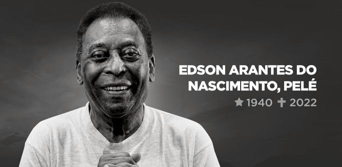

Ex-jogador brasileiro de futebol
Ex-jogador brasileiro de futebol
Pelé (1940-2022) foi um jogador brasileiro de futebol. Conhecido como "Rei Pelé", encantou o mundo com seus dribles e passes. Foi nomeado Embaixador Mundial do Futebol. Foi eleito o "Atleta do Século". Levou o Santos Futebol Clube, onde atuou por mais de duas décadas, a ganhar mais de quarenta títulos.
Pelé foi artilheiro do campeonato paulista, ganhou o título 11 vezes, dos quais, 9 foram consecutivas. Foi artilheiro da Taça Brasil, da Taça Libertadores e do Torneio Rio São Paulo. Fez sua estreia na Seleção Brasileira com apenas 17 anos, incompletos, de onde só se despediu em 1971. Jogou no New York Cosmos de 1975 a 1977. Foi Ministro dos Esportes entre os anos de 1995 e 1998.

Pelé durante sua passagem pelo Santos FC.
Edson Arantes do Nascimento, conhecido como Pelé, nasceu na cidade de Três Corações, em Minas Gerais, no dia 23 de outubro de 1940. Filho de João Ramos do Nascimento (Dondinho), também jogador de futebol, e de Celeste Arantes.
Desde pequeno Pelé gostava de futebol e jogava com uma bola de pano. Em 1944 mudou-se com a família para a cidade de Bauru, em São Paulo.
Com 10 anos, Pelé começou a carreira de jogador de futebol no infanto-juvenil do Bauru Atlético Clube, em São Paulo, onde conquistou o bicampeonato em 1954 e 1955.
Ainda em 1956, Pelé foi levado para treinar no Santos F.C. pelo também jogador Waldemar de Brito. Em jogo treino, Pelé fez quatro gols, quando seu time ganhou de 6 a 1.
Sua primeira partida oficial foi no dia 7 de setembro de 1956, em um jogo amistoso entre Santos e Corinthians. O resultado foi de 7 a 1 para o Santos, com dois gols de Pelé.
Na contagem de 1000 gols da carreira, estes foram os primeiros oficializados. Pelé levou o Santos a conquistar muitos títulos. Em 1974 fez o seu último jogo com a camisa do Santos.
Pelé fez sua estreia na seleção brasileira no dia 7 de julho de 1957, com 16 anos, na Copa Rocca, no jogo contra a Argentina, no Estádio do Maracanã no Rio de Janeiro, quando marcou seu “primeiro gol pela seleção”, porém o Brasil perdeu por 2 a 1.
Em 1958, na Copa do Mundo na Suécia, Pelé começou a usar a camisa n.º 10, que se tornou sua marca. Nos dois primeiros jogos ele ficou na reserva, só vindo a jogar na terceira partida, contra a União Soviética.
Veja um video dele jogando na seleção brasileira:
Em setembro de 2021, Pelé foi diagnosticado com um câncer de cólon. Depois de passar por vários internamentos e tratamentos, em dezembro de 2022, Pelé deu entrada no Hospital Albert Einstein, em São Paulo, onde permaneceu durante todo o mês.
Nas últimas semanas o quadro de saúde de Pelé se agravou, pois a doença não mais respondia ao tratamento quimioterápico.
Pelé faleceu em São Paulo, no dia 29 de dezembro de 2022, com 82 anos.
